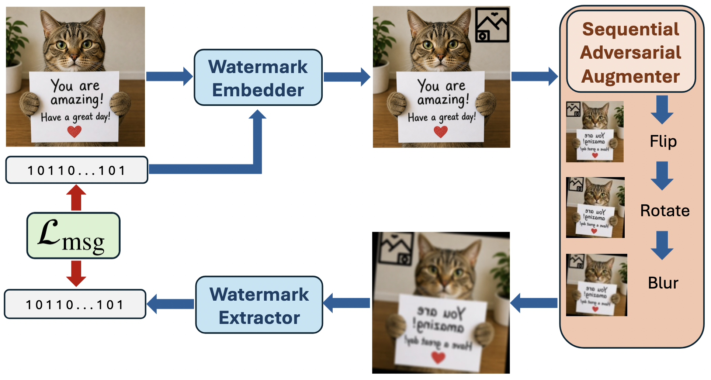
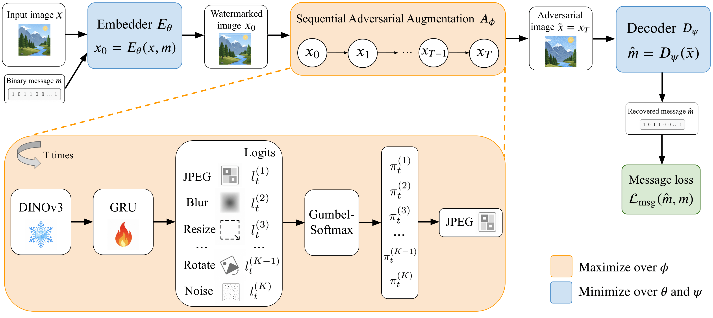
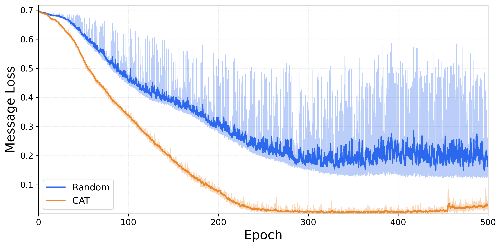
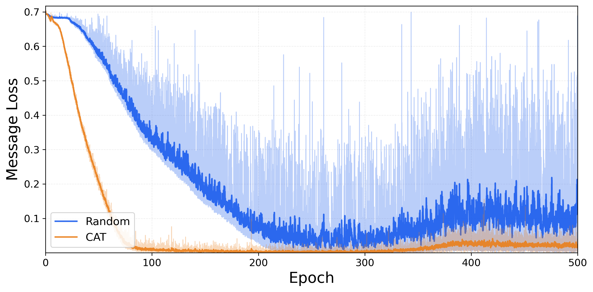

Even a single learned attack step improves robustness over random augmentation under a fair compute-matched comparison. The largest gains appear for VideoSeal 1.0 and PixelSeal, especially on difficult geometric and combined attacks.

CAT improves overall bit accuracy by 2.2% and watermark capacity by 17.0% for single-step and compositional attacks.
Robust watermarking is typically trained with random post-processing augmentation, but random sampling under-covers the combinatorial space of realistic attack pipelines and rarely encounters the rare compositions that actually break detection. This leads to unstable training and poor sample efficiency. We instead formulate watermark robustness as a min-max problem over a structured space of compositional transformations. We propose Compositional Adversarial Training (CAT), a plug-in framework that learns a sequential differentiable adversary that observes the current watermarked image and selects an attack family at each step to maximally disrupt message recovery. CAT combines a straight-through Gumbel-Softmax attack selection with entropy regularization, allowing the backward pass to be end-to-end differentiable and aggregate gradient information across attack families, yielding faster, smoother convergence without collapsing to a single attack mode. We evaluate CAT on post-generation watermarks VideoSeal 0.0, VideoSeal 1.0, and PixelSeal and in-generation WMAR under both single-step and two-step attack suites, on in-distribution and multiple out-of-distribution image and video benchmarks. CAT consistently outperforms random-augmentation baselines trained with the same augmentation budget, with the largest gains on hard composed attacks and OOD evaluations; improving overall watermark capacity by up to 63.5% in the single-step attack setting and 13.0% in the compositional setting. In the autoregressive setting, CAT improves the TPR@FPR=1% by 12% on average over random training on difficult geometric transformations.

Overview of the CAT training pipeline. The embedder writes message m into image x; the sequential adversarial augmenter repeatedly observes the current image, selects an attack family via straight-through Gumbel-Softmax, and applies differentiable attacks; the extractor recovers the message and the message loss drives both watermark and adversary updates. Entropy regularization keeps the attack policy diverse.
Given a watermarked image, we seek parameters for an embedder Eθ and extractor Dψ that minimize message recovery error under worst-case compositional attacks. This yields a min-max objective: the watermark model minimizes message loss while a learned adversary Aφ maximizes it over a structured library of realistic, differentiable attack families — covering value distortions, compression artifacts, and geometric transformations.
The adversary instantiates as a controller over a library of K differentiable attack primitives. Starting from the watermarked image, it applies attacks sequentially for T steps, where each step's choice depends on the intermediate image produced by all previous steps. This lets the adversary discover order-sensitive compositions (e.g., blur → compression, resize → color distortion) that random augmentation rarely encounters. A frozen DINOv2 ViT-S/16 backbone extracts visual features at each step, and a lightweight GRU tracks the attack history to inform the next selection. A two-layer MLP maps the GRU hidden state to logits over attack families.
Discrete attack selection is made differentiable via a straight-through Gumbel-Softmax relaxation: the forward pass uses a one-hot sample (selecting one attack), while the backward pass uses the continuous relaxation so that gradients flow through the attack choice. All K primitives are evaluated in parallel and their outputs are combined as a weighted sum — enabling end-to-end training without a separate inner optimization loop.
Without constraints, the adversary collapses to a single maximally destructive attack. An entropy bonus H(πφ) added to the adversary objective keeps the attack policy diverse throughout training, prevents premature over-specialization, and improves robustness beyond a single dominant failure mode. Because the adversary shares the watermark model's computational graph, no separate inner-loop optimization is needed — the adversary contributes only 800K trainable parameters and 20–30% additional training overhead, while leaving inference-time behavior entirely unchanged.

(a) Single-step augmentation training

(b) Compositional augmentation training
Random augmentation creates unstable training due to inefficient augmentation allocations, whereas the learned adversary consistently targets the model's current weaknesses.
Even a single learned attack step improves robustness over random augmentation under a fair compute-matched comparison. The largest gains appear for VideoSeal 1.0 and PixelSeal, especially on difficult geometric and combined attacks.
| Model (bits) | Identity | Value | Compression | Geometric | Combined | Overall | ||||||
|---|---|---|---|---|---|---|---|---|---|---|---|---|
| Bit acc. ↑ | Cap. ↑ | Bit acc. ↑ | Cap. ↑ | Bit acc. ↑ | Cap. ↑ | Bit acc. ↑ | Cap. ↑ | Bit acc. ↑ | Cap. ↑ | Bit acc. ↑ | Cap. ↑ | |
| InvisMark (100) | 0.990 | 95.99 | 0.876 | 72.90 | 0.954 | 88.45 | 0.828 | 63.25 | 0.861 | 67.84 | 0.869 | 71.01 |
| TrustMark (100) | 0.996 | 98.92 | 0.956 | 86.28 | 0.898 | 79.09 | 0.754 | 50.29 | 0.993 | 97.90 | 0.889 | 76.08 |
| MBRS (256) | 0.987 | 242.60 | 0.915 | 185.99 | 0.884 | 190.52 | 0.653 | 78.90 | 0.959 | 217.48 | 0.834 | 158.92 |
| VideoSeal 0.0 (96) | 0.997 | 94.00 | 0.984 | 88.69 | 0.980 | 86.86 | 0.945 | 75.58 | 0.994 | 92.33 | 0.961 | 81.06 |
| + CAT | 0.998 | 94.75 | 0.978 | 86.93 | 0.986 | 89.21 | 0.953 | 78.60 | 0.994 | 92.22 | 0.966 | 82.85 ↑2.2% |
| VideoSeal 1.0 (256) | 0.898 | 135.17 | 0.879 | 123.45 | 0.872 | 118.96 | 0.822 | 94.39 | 0.892 | 130.60 | 0.846 | 106.41 |
| + CAT | 0.941 | 175.63 | 0.857 | 129.47 | 0.896 | 146.11 | 0.835 | 114.75 | 0.921 | 160.39 | 0.854 | 125.57 ↑18.0% |
| PixelSeal (128) | 0.918 | 76.46 | 0.895 | 68.65 | 0.880 | 63.89 | 0.819 | 48.19 | 0.902 | 70.27 | 0.849 | 56.21 |
| + CAT | 0.986 | 117.73 | 0.956 | 102.90 | 0.957 | 102.96 | 0.900 | 83.05 | 0.973 | 109.36 | 0.925 | 91.91 ↑63.5% |
| Model (bits) | Identity | Value | Compression | Geometric | Combined | Overall | ||||||
|---|---|---|---|---|---|---|---|---|---|---|---|---|
| Bit acc. ↑ | Cap. ↑ | Bit acc. ↑ | Cap. ↑ | Bit acc. ↑ | Cap. ↑ | Bit acc. ↑ | Cap. ↑ | Bit acc. ↑ | Cap. ↑ | Bit acc. ↑ | Cap. ↑ | |
| InvisMark (100) | 0.990 | 96.02 | 0.876 | 72.93 | 0.691 | 35.10 | 0.825 | 62.83 | 0.582 | 19.23 | 0.764 | 51.59 |
| TrustMark (100) | 0.993 | 98.39 | 0.959 | 87.60 | 0.894 | 78.18 | 0.753 | 50.21 | 0.947 | 84.07 | 0.878 | 73.03 |
| MBRS (256) | 0.987 | 243.37 | 0.922 | 191.47 | 0.848 | 162.21 | 0.648 | 74.77 | 0.775 | 105.06 | 0.786 | 128.44 |
| VideoSeal 0.0 (96) | 0.998 | 94.59 | 0.986 | 89.85 | 0.977 | 86.11 | 0.948 | 76.61 | 0.844 | 57.95 | 0.956 | 80.25 |
| + CAT | 0.999 | 95.18 | 0.974 | 86.34 | 0.982 | 87.96 | 0.957 | 79.74 | 0.860 | 61.83 | 0.961 | 81.84 ↑2.0% |
| VideoSeal 1.0 (256) | 0.900 | 136.47 | 0.883 | 125.61 | 0.869 | 117.38 | 0.824 | 95.59 | 0.766 | 78.96 | 0.842 | 105.00 |
| + CAT | 0.946 | 179.81 | 0.853 | 129.33 | 0.884 | 140.37 | 0.840 | 118.13 | 0.723 | 81.29 | 0.846 | 123.00 ↑17.1% |
| PixelSeal (128) | 0.921 | 77.60 | 0.900 | 70.26 | 0.871 | 61.44 | 0.822 | 49.03 | 0.748 | 40.15 | 0.844 | 55.26 |
| + CAT | 0.992 | 121.32 | 0.946 | 101.38 | 0.948 | 99.94 | 0.899 | 83.02 | 0.842 | 72.27 | 0.916 | 89.44 ↑61.8% |
The advantage of CAT becomes clearest in the compositional setting, where the adversary applies a two-step attack sequence and must model both attack identity and order. Gains are concentrated on harder mixed and repeated attack pairs.
| Model (bits) | Val+Val | Val+Comp | Val+Geom | Comp+Comp | Comp+Geom | Geom+Geom | Overall | |||||||
|---|---|---|---|---|---|---|---|---|---|---|---|---|---|---|
| Bit acc. ↑ | Cap. ↑ | Bit acc. ↑ | Cap. ↑ | Bit acc. ↑ | Cap. ↑ | Bit acc. ↑ | Cap. ↑ | Bit acc. ↑ | Cap. ↑ | Bit acc. ↑ | Cap. ↑ | Bit acc. ↑ | Cap. ↑ | |
| InvisMark (100) | 0.898 | 71.44 | 0.652 | 27.15 | 0.875 | 68.63 | 0.474 | 0.85 | 0.603 | 21.75 | 0.888 | 70.52 | 0.813 | 57.92 |
| TrustMark (100) | 0.957 | 86.21 | 0.965 | 88.49 | 0.786 | 52.86 | 0.974 | 90.92 | 0.779 | 50.97 | 0.708 | 36.58 | 0.834 | 62.14 |
| MBRS (256) | 0.917 | 182.87 | 0.836 | 130.67 | 0.602 | 41.86 | 0.774 | 90.86 | 0.554 | 15.81 | 0.495 | 0.98 | 0.653 | 60.74 |
| VideoSeal 0.0 (96) | 0.972 | 83.44 | 0.985 | 87.84 | 0.961 | 78.08 | 0.992 | 91.40 | 0.974 | 82.79 | 0.930 | 72.83 | 0.961 | 77.79 |
| + CAT | 0.988 | 90.30 | 0.995 | 93.28 | 0.979 | 86.26 | 0.999 | 95.34 | 0.990 | 90.79 | 0.935 | 78.05 | 0.978 | 86.03 ↑10.6% |
| VideoSeal 1.0 (256) | 0.875 | 121.35 | 0.887 | 127.69 | 0.827 | 95.41 | 0.897 | 134.39 | 0.858 | 109.22 | 0.799 | 86.78 | 0.829 | 96.13 |
| + CAT | 0.840 | 121.57 | 0.891 | 145.41 | 0.826 | 109.69 | 0.938 | 172.97 | 0.894 | 141.66 | 0.825 | 111.74 | 0.827 | 108.30 ↑12.7% |
| PixelSeal (128) | 0.964 | 106.45 | 0.977 | 112.06 | 0.954 | 100.25 | 0.987 | 117.75 | 0.968 | 106.43 | 0.922 | 93.04 | 0.952 | 98.76 |
| + CAT | 0.974 | 113.81 | 0.990 | 121.27 | 0.964 | 107.65 | 0.998 | 126.29 | 0.982 | 116.19 | 0.928 | 100.21 | 0.965 | 107.73 ↑9.1% |
| Model (bits) | Val+Val | Val+Comp | Val+Geom | Comp+Comp | Comp+Geom | Geom+Geom | Overall | |||||||
|---|---|---|---|---|---|---|---|---|---|---|---|---|---|---|
| Bit acc. ↑ | Cap. ↑ | Bit acc. ↑ | Cap. ↑ | Bit acc. ↑ | Cap. ↑ | Bit acc. ↑ | Cap. ↑ | Bit acc. ↑ | Cap. ↑ | Bit acc. ↑ | Cap. ↑ | Bit acc. ↑ | Cap. ↑ | |
| InvisMark (100) | 0.902 | 72.69 | 0.653 | 27.61 | 0.875 | 68.97 | 0.474 | 0.85 | 0.600 | 21.29 | 0.883 | 69.50 | 0.812 | 57.96 |
| TrustMark (100) | 0.964 | 88.76 | 0.968 | 89.85 | 0.790 | 53.95 | 0.974 | 91.65 | 0.782 | 51.93 | 0.710 | 37.13 | 0.838 | 63.39 |
| MBRS (256) | 0.927 | 190.84 | 0.851 | 140.04 | 0.608 | 45.61 | 0.791 | 100.83 | 0.559 | 18.03 | 0.496 | 0.97 | 0.660 | 65.18 |
| VideoSeal 0.0 (96) | 0.978 | 86.28 | 0.961 | 81.15 | 0.968 | 80.81 | 0.937 | 77.05 | 0.947 | 75.52 | 0.937 | 74.67 | 0.957 | 77.31 |
| + CAT | 0.992 | 91.87 | 0.991 | 91.84 | 0.984 | 88.57 | 0.977 | 89.05 | 0.988 | 89.97 | 0.940 | 79.73 | 0.981 | 87.34 ↑13.0% |
| VideoSeal 1.0 (256) | 0.881 | 124.44 | 0.886 | 127.38 | 0.832 | 98.03 | 0.895 | 133.09 | 0.854 | 106.99 | 0.800 | 87.42 | 0.831 | 96.97 |
| + CAT | 0.852 | 128.33 | 0.869 | 136.19 | 0.839 | 117.17 | 0.909 | 157.25 | 0.878 | 134.59 | 0.831 | 115.09 | 0.827 | 109.24 ↑12.7% |
| PixelSeal (128) | 0.973 | 111.00 | 0.939 | 98.69 | 0.961 | 103.61 | 0.902 | 90.40 | 0.926 | 92.72 | 0.927 | 94.93 | 0.941 | 96.20 |
| + CAT | 0.977 | 115.17 | 0.980 | 115.86 | 0.967 | 108.95 | 0.969 | 114.39 | 0.970 | 110.31 | 0.929 | 100.63 | 0.962 | 106.43 ↑10.6% |